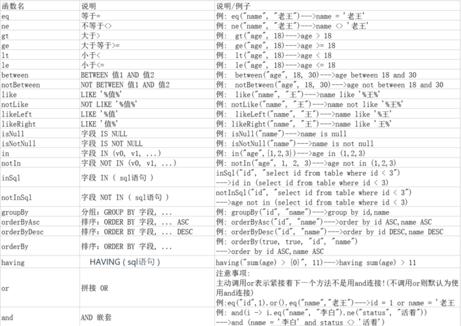

MyBatis-Plus 笔记¶
Mapper 接口¶
Mapper 接口继承 MyBatis-Plus 提供的 BaseMapper 基础接口，自动提供 CRUD 方法
Java
// 泛型为数据库对应的实体类
public interface UserMapper extends BaseMapper<User> {}
Insert¶
Java
// 插入一条记录
// T 就是要插入的实体对象
// 默认主键生成策略为雪花算法（后面讲解）
int insert(T entity);
| 类型 | 参数名 | 描述 |
|---|---|---|
| T | entity | 实体对象 |
Delete¶
Java
// 根据 entity 条件，删除记录
int delete(@Param(Constants.WRAPPER) Wrapper<T> wrapper);
// 删除（根据ID 批量删除）
int deleteBatchIds(@Param(Constants.COLLECTION) Collection<? extends Serializable> idList);
// 根据 ID 删除
int deleteById(Serializable id);
// 根据 columnMap 条件，删除记录
int deleteByMap(@Param(Constants.COLUMN_MAP) Map<String, Object> columnMap);
| 类型 | 参数名 | 描述 |
|---|---|---|
| Wrapper |
wrapper | 实体对象封装操作类（可以为 null） |
| Collection<? extends Serializable> | idList | 主键 ID 列表(不能为 null 以及 empty) |
| Serializable | id | 主键 ID |
| Map |
columnMap | 表字段 map 对象 |
Update¶
Java
// 根据 whereWrapper 条件，更新记录
int update(@Param(Constants.ENTITY) T updateEntity,
@Param(Constants.WRAPPER) Wrapper<T> whereWrapper);
// 根据 ID 修改 主键属性必须值
int updateById(@Param(Constants.ENTITY) T entity);
| 类型 | 参数名 | 描述 |
|---|---|---|
| T | entity | 实体对象 (set 条件值,可为 null) |
| Wrapper |
updateWrapper | 实体对象封装操作类（可以为 null,里面的 entity 用于生成 where 语句） |
Select¶
Java
// 根据 ID 查询
T selectById(Serializable id);
// 根据 entity 条件，查询一条记录
T selectOne(@Param(Constants.WRAPPER) Wrapper<T> queryWrapper);
// 查询（根据ID 批量查询）
List<T> selectBatchIds(@Param(Constants.COLLECTION) Collection<? extends Serializable> idList);
// 根据 entity 条件，查询全部记录
List<T> selectList(@Param(Constants.WRAPPER) Wrapper<T> queryWrapper);
// 查询（根据 columnMap 条件）
List<T> selectByMap(@Param(Constants.COLUMN_MAP) Map<String, Object> columnMap);
// 根据 Wrapper 条件，查询全部记录
List<Map<String, Object>> selectMaps(@Param(Constants.WRAPPER) Wrapper<T> queryWrapper);
// 根据 Wrapper 条件，查询全部记录。注意： 只返回第一个字段的值
List<Object> selectObjs(@Param(Constants.WRAPPER) Wrapper<T> queryWrapper);
// 根据 entity 条件，查询全部记录（并翻页）
IPage<T> selectPage(IPage<T> page, @Param(Constants.WRAPPER) Wrapper<T> queryWrapper);
// 根据 Wrapper 条件，查询全部记录（并翻页）
IPage<Map<String, Object>> selectMapsPage(IPage<T> page, @Param(Constants.WRAPPER) Wrapper<T> queryWrapper);
// 根据 Wrapper 条件，查询总记录数
Integer selectCount(@Param(Constants.WRAPPER) Wrapper<T> queryWrapper);
| 类型 | 参数名 | 描述 |
|---|---|---|
| Serializable | id | 主键 ID |
| Wrapper |
queryWrapper | 实体对象封装操作类（可以为 null） |
| Collection<? extends Serializable> | idList | 主键 ID 列表(不能为 null 以及 empty) |
| Map |
columnMap | 表字段 map 对象 |
| IPage |
page | 分页查询条件（可以为 RowBounds.DEFAULT） |
Service 接口¶
Service 接口封装 IService 接口，CRUD 采用 get 查询单行 remove 删除 list 查询集合 page 分页 前缀命名方式
Java
// Service 接口
public interface UserService extends IService<User> {}
// Service 实现类
// 需指定Mapper接口、实现类
@Service
public class UserServiceImpl extends ServiceImpl<UserMapper,User> implements UserService {}
CRUD 方法¶
保存:
Java
// 插入一条记录（选择字段，策略插入）
boolean save(T entity);
// 插入（批量）
boolean saveBatch(Collection<T> entityList);
// 插入（批量）
boolean saveBatch(Collection<T> entityList, int batchSize);
修改或者保存：
Java
// TableId 注解存在更新记录，否插入一条记录
boolean saveOrUpdate(T entity);
// 根据updateWrapper尝试更新，否继续执行saveOrUpdate(T)方法
boolean saveOrUpdate(T entity, Wrapper<T> updateWrapper);
// 批量修改插入
boolean saveOrUpdateBatch(Collection<T> entityList);
// 批量修改插入
boolean saveOrUpdateBatch(Collection<T> entityList, int batchSize);
移除：
Java
// 根据 queryWrapper 设置的条件，删除记录
boolean remove(Wrapper<T> queryWrapper);
// 根据 ID 删除
boolean removeById(Serializable id);
// 根据 columnMap 条件，删除记录
boolean removeByMap(Map<String, Object> columnMap);
// 删除（根据ID 批量删除）
boolean removeByIds(Collection<? extends Serializable> idList);
更新：
Java
// 根据 UpdateWrapper 条件，更新记录 需要设置sqlset
boolean update(Wrapper<T> updateWrapper);
// 根据 whereWrapper 条件，更新记录
boolean update(T updateEntity, Wrapper<T> whereWrapper);
// 根据 ID 选择修改
boolean updateById(T entity);
// 根据ID 批量更新
boolean updateBatchById(Collection<T> entityList);
// 根据ID 批量更新
boolean updateBatchById(Collection<T> entityList, int batchSize);
数量：
Java
// 查询总记录数
int count();
// 根据 Wrapper 条件，查询总记录数
int count(Wrapper<T> queryWrapper);
查询：
Java
// 根据 ID 查询
T getById(Serializable id);
// 根据 Wrapper，查询一条记录。结果集，如果是多个会抛出异常，随机取一条加上限制条件 wrapper.last("LIMIT 1")
T getOne(Wrapper<T> queryWrapper);
// 根据 Wrapper，查询一条记录
T getOne(Wrapper<T> queryWrapper, boolean throwEx);
// 根据 Wrapper，查询一条记录
Map<String, Object> getMap(Wrapper<T> queryWrapper);
// 根据 Wrapper，查询一条记录
<V> V getObj(Wrapper<T> queryWrapper, Function<? super Object, V> mapper);
集合：
Java
// 查询所有
List<T> list();
// 查询列表
List<T> list(Wrapper<T> queryWrapper);
// 查询（根据ID 批量查询）
Collection<T> listByIds(Collection<? extends Serializable> idList);
// 查询（根据 columnMap 条件）
Collection<T> listByMap(Map<String, Object> columnMap);
// 查询所有列表
List<Map<String, Object>> listMaps();
// 查询列表
List<Map<String, Object>> listMaps(Wrapper<T> queryWrapper);
// 查询全部记录
List<Object> listObjs();
// 查询全部记录
<V> List<V> listObjs(Function<? super Object, V> mapper);
// 根据 Wrapper 条件，查询全部记录
List<Object> listObjs(Wrapper<T> queryWrapper);
// 根据 Wrapper 条件，查询全部记录
<V> List<V> listObjs(Wrapper<T> queryWrapper, Function<? super Object, V> mapper);
分页查询¶
添加分页拦截器
Java
@Bean
public MybatisPlusInterceptor mybatisPlusInterceptor() {
MybatisPlusInterceptor interceptor = new MybatisPlusInterceptor();
// 分页拦截器
interceptor.addInnerInterceptor(new PaginationInnerInterceptor(DbType.MYSQL));
return interceptor;
}
Service 方法：调用 Mapper 方法
Java
//1.条件构造器
LambdaQueryWrapper<Headline> queryWrapper = new LambdaQueryWrapper<>();
queryWrapper.like(!StringUtils.isEmpty(portalVo.getKeyWords()),Headline::getTitle,portalVo.getKeyWords())
.eq(portalVo.getType()!= null,Headline::getType,portalVo.getType());
//2.分页参数（当前页数，总页数）
IPage<Headline> page = new Page<>(portalVo.getPageNum(),portalVo.getPageSize());
//3.Mapper方法（page，实体类）
headlineMapper.selectPageMap(page, portalVo);
//4.结果封装
//分页数据封装
Map<String,Object> pageInfo =new HashMap<>();
pageInfo.put("分页数据",page.getRecords()); // List<实体类>
pageInfo.put("当前页",page.getCurrent());
pageInfo.put("每页显示的记录数",page.getSize());
pageInfo.put("总页数",page.getPages());
pageInfo.put("总记录数",page.getTotal());
pageInfo.put("是否有上一页",page.hasPrevious());
pageInfo.put("是否有下一页",page.getTotal());
Map<String,Object> pageInfoMap=new HashMap<>();
pageInfoMap.put("pageInfo",pageInfo);
// 响应JSON
return Result.ok(pageInfoMap);
Mapper 方法
Java
//传入参数携带Ipage接口
//返回结果为IPage
IPage<User> selectPageVo(IPage<?> page, Integer id);
条件构造器¶
Wrapper ： 条件构造抽象类，最顶端父类
-
AbstractWrapper ： 用于查询条件封装，生成 sql 的 where 条件
- QueryWrapper ： 查询/删除条件封装
- UpdateWrapper ： 修改条件封装
- AbstractLambdaWrapper ： 使用Lambda 语法
- LambdaQueryWrapper ：用于Lambda语法使用的查询Wrapper
- LambdaUpdateWrapper ： Lambda 更新封装Wrapper
-
UpdateWrapper可以将列值修改为 null 值，可随意更改列值
-
推荐使用 Lambda 条件构造器，能直接使用实体类的属性 getter 方法（类名:方法名）
对比
Java
// QueryWrapper
QueryWrapper<User> queryWrapper = new QueryWrapper<>();
queryWrapper.eq("name", "John")
.ge("age", 18)
.orderByDesc("create_time")
.last("limit 10");
// LambdaQueryWrapper
LambdaQueryWrapper<User> lambdaQueryWrapper = new LambdaQueryWrapper<>();
lambdaQueryWrapper.eq(User::getName, "John")
.ge(User::getAge, 18)
.orderByDesc(User::getCreateTime)
.last("limit 10");
条件语法：

核心注解¶
@TableName
- 描述：表名注解，标识实体类对应的表
- 使用位置：实体类
@Table
- 描述：主键注解
- 使用位置：实体类主键字段
@TableField
- 描述：字段注解（非主键）
Java
// 实体类
@TableName("sys_user")
public class User {
@TableId(value="主键列名",type=主键策略)
private Long id;
@TableField("nickname")
private String name;
private Integer age;
private String email;
}
| 属性 | 类型 | 必须指定 | 默认值 | 描述 |
|---|---|---|---|---|
| value | String | 否 | "" | 主键字段名 |
| type | Enum | 否 | IdType.NONE | 指定主键类型 |
IdType 可选参数：
| 值 | 描述 |
|---|---|
| AUTO | 数据库 ID 自增 (mysql配置主键自增长) |
| ASSIGN_ID（默认） | 分配 ID(主键类型为 Number(Long )或 String)(since 3.3.0),使用接口IdentifierGenerator的方法nextId(默认实现类为DefaultIdentifierGenerator雪花算法) |
雪花算法生成的ID需使用 Long 或 String 类型
逻辑删除¶
逻辑删除：通过更改记录的状态或添加标记字段来模拟删除操作
逻辑删除字段
- 数据库
SQL
ALTER TABLE USER ADD deleted INT DEFAULT 0 ; # int 类型 1 逻辑删除 0 未逻辑删除
- 实体类：
@TableLogic注解
Java
@Data
public class User {
// @TableId
private Integer id;
private String name;
private Integer age;
private String email;
@TableLogic
//逻辑删除字段 int mybatis-plus下,默认 逻辑删除值为1 未逻辑删除 1
private Integer deleted;
}
乐观锁¶
版本号/时间戳：为数据添加一个版本号或时间戳字段，每次更新数据时，比较当前版本号或时间戳与期望值是否一致，若一致则更新成功，否则表示数据已被修改，需要进行冲突处理
添加版本号拦截器
Java
@Bean
public MybatisPlusInterceptor mybatisPlusInterceptor() {
MybatisPlusInterceptor interceptor = new MybatisPlusInterceptor();
// 版本号拦截器
interceptor.addInnerInterceptor(new OptimisticLockerInnerInterceptor());
return interceptor;
}
Version 字段
- 数据库表
SQL
ALTER TABLE USER ADD VERSION INT DEFAULT 1 ; # int 类型 乐观锁字段
- 实体类：
@Version注解
Java
@Version
private Integer version;
防止全表更新/删除¶
添加拦截器
Java
@Bean
public MybatisPlusInterceptor mybatisPlusInterceptor() {
MybatisPlusInterceptor interceptor = new MybatisPlusInterceptor();
// 阻止全表更新/删除拦截器
interceptor.addInnerInterceptor(new BlockAttackInnerInterceptor());
return interceptor;
}